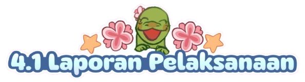

Proyek bazar Integrated Learning yang diadakan pada tanggal 3 Februari dan 5 Februari 2026 diikuti oleh semua siswi kelas IX. Kelompok kami sudah mempersiapkan dan merencanakan banyak hal agar kegiatan ini dapat berjalan dengan lancar. Dari dekorasi booth, senam irama, bahan dan alat produk jualan, desain dan logo toko. Dengan pelaksanaan ini, pasti ada banyaknya tantangan dan konflik yang muncul. Tantangan tersebut bisa berupa perbedaan pendapat, kesusahan mencari waktu kerja kelompok dan lain-lain. Kelompok kami berhasil untuk menyelesaikan konflik tersebut dengan komunikasi dan diskusi yang dilakukan secara rutin. Dalam proyek ini, kami harus mempertimbangkan banyak hal mengenai harga jual produk, dekorasi booth, biaya produksi dan minat pasar.
Setelah itu, kami semua membagi tugas pembuatan produk dan hal lainnya meliputi proyek ini sesuai dengan kemampuan dan bakat masing-masing anggota. Mulai dari mengumpulkan uang, mendesain produk, desain booth dan pembuatan perencanaan produk. Kami semua dalam kelompok saling membantu dan memberikan saran kepada satu sama lain agar hasilnya dapat maksimal. Dari pembelian produk, pembuatan produk kesenian, bioteknologi atau PPKN, kelompok kami bekerja sama dengan optimal agar dapat mencapai hasil yang bersifat totalitas. Selain dari perencanaan produk, kami juga membuat banyak konten menarik meliputi reels, post ataupun story yang kami unggah di Instagram kami.
Sebelum pelaksanaan bazar, kami membuka PO dalam 2 batch bagi pihak internal dan external yaitu Batch 1 dan Batch 2. Kami membuka PO Batch 1 pada tanggal 14 Desember 2025 sampai dengan tanggal 21 Desember 2025. Kami mengadakan 2 Batch PO sehingga lebih mudah untuk kami mengatur stok dan menyiapkan produk-produk tersebut. Sedangkan, kami membuka PO Batch 2 pada tanggal 5 Januari 2026 sampai dengan 12 Januari 2026. Terlihat bahwa pada PO kami, barang yang paling banyak dipesan adalah Charmos atau gantungan kunci kami. Kelompok kami membuat sebuah strategi untuk memisahkan barang PO dan barang OTS sehingga lebih mudah bagi kami untuk pelaksanaan bazar nanti.
Pada tanggal 4 Februari 2026, yaitu satu hari sebelum pelaksanaan bazar, kelompok kami mempersiapkan semua dekor dan produk sehingga hanya perlu dijual besoknya. Kami juga sudah menyiapkan terpal yang dapat dipasang sehingga jika terjadi cuaca yang kurang kondusif, booth kami tetap aman dari cuaca tersebut. Letak booth bazar kami ada di depan Bangsal OR SMP Santa Ursula Jakarta dan area photo booth kami terletak di depan Lapangan Lourdes. Kegiatan bazar kami pada tanggal 5 Februari 2026 dimulai dari pukul 09.00 pagi sampai dengan jam 14.00 sore. Tetapi, kami sudah sampai dari jam 07.00 pagi untuk mempersiapkan semua produk dan meletakkannya pada booth kami.
Setelah dianalisis penjualan lebih lanjut, puncak ramainya booth kami yaitu pada jam 09.00 dan 11.20 karena waktu istirahat murid SMP dan SD. Kami sangat terkejut karena pada jam 09.00, minuman dan makanan kami terjual dengan jumlah yang sangat banyak. Setelah istirahat pertama, kami merapikan booth kami seperti semula dan membuat beberapa video konten sehingga dapat menarik lebih banyak pengunjung dan pembeli. Dalam konten tersebut, kami mempromosikan produk kami melalui iklan dan mengimplementasikan berbagai tren yang sesuai dengan konsep bazar kami. Pada kegiatan bazar kemarin, produk pertama kami yang habis terjual yaitu Komoplush. Produk tersebut berupa kelinci yang kami rajut sendiri. Sebelum jam 11.20, kami sudah mempersiapkan beberapa minuman dan makanan sebelumnya sehingga lebih mudah untuk kami dalam keadaan yang ramai. Kami juga memastikan jumlah stok produk kami sehingga dapat dicatat dalam laporan penjualan.
Pada jam 11.20 yaitu istirahat kedua, merupakan saat dimana booth kami terasa paling ramai dari jam sebelumnya. Beberapa anggota kelompok kami menerima pesanan dan anggota lainnya menyiapkan minuman dan barang yang dipesan. Walaupun dalam keadaan ramai, kelompok kami tetap berusaha untuk tenang dan berpikir strategis sehingga penjualan dapat berjalan dengan lancar. Pada jam tersebut, adanya orang tua murid kelas IX dan tamu undangan yang datang ke acara bazar kami. Jadi, selain murid dari Santa Ursula, adanya guru, tamu dan orang tua yang juga beli dari booth kami. Setelah istirahat kedua, semua makanan dan minuman kami habis terjual sehingga sisa photo booth, gantungan kunci dan slime kami. Saat waktunya pulang sekolah, booth kami kembali ramai dan semua stok produk kami habis dalam waktu yang singkat. Dikarenakan hal tersebut, kelompok kami mulai membereskan booth kami dan area sekitarnya sebagai bentuk tanggung jawab kami selaku pelaksana kegiatan. Ini merupakan salah satu bentuk persatuan dan kesatuan yang terdapat dalam kelompok kami.
Dalam proyek bazar ini, kami belajar pentingnya kerjasama dan komunikasi agar semua kegiatan dapat berjalan dengan lancar dari awal sampai akhir. Setelah melihat seluruh penjualan bazar, produk kami yang paling laku adalah Charmos atau gantungan kunci. Produk tersebut, sekaligus merupakan produk PPKn kami yang mengandung unsur budaya. Gambar pada gantungan kunci tersebut merupakan komodo yang melakukan beberapa aktivitas dengan kain berpola batik dari NTT. Kami memilih produk tersebut dikarenakan gantungan kunci merupakan sebuah barang yang sering digunakan semua orang dan jika mereka memakai gantungan tersebut, dapat menjadi pengingat akan kekayaan budaya Indonesia. Gantungan kunci ini juga dapat memperkenalkan budaya NTT sekaligus Indonesia kepada orang lain.
Selain itu, kelompok kami menganalisis berbagai macam produk yang sering dibeli oleh kelompok orang yang berbeda. Pertama, murid SMP dan SMA lebih sering membeli produk makanan, minuman dan barang yang sederhana. Sedangkan murid SD cenderung membeli barang yang berupa hal lucu seperti slime. Salah satu hal yang membuat kelompok kami terkejut adalah banyaknya guru yang membeli kopi kami, bahkan ada beberapa guru yang kembali lagi setelah kopi mereka sudah habis. Adanya satu produk lagi yang bukan berupa barang tetapi foto yaitu photo booth. Pada produk ini, kami menyiapkan sebuah kamera yang bisa mencetak foto dan latar yang berwarna biru sehingga yang membeli dapat berfoto bersama teman-temannya di tempat tersebut.
Selama proses pelaksanaan dan bazar, kelompok kami belajar mengenai banyak hal penting. Hal yang paling utama yaitu pentingnya kerja sama dan diskusi. Dari perencanaan produk hingga pembagian gaji, kelompok kami menyepakati selalu berdiskusi agar dapat hasil yang disepakati setiap anggota. Pembagian gaji kami dibagi sesuai dengan usaha dan kontribusi setiap anggota. Melalui kegiatan ini, kami sadar bahwa dengan adanya komunikasi dan saling menghargai setiap pendapat sangat penting agar tidak terjadi konflik. Pengalaman bazar ini juga dapat membantu dan melatih kami bekerja sama kedepannya.